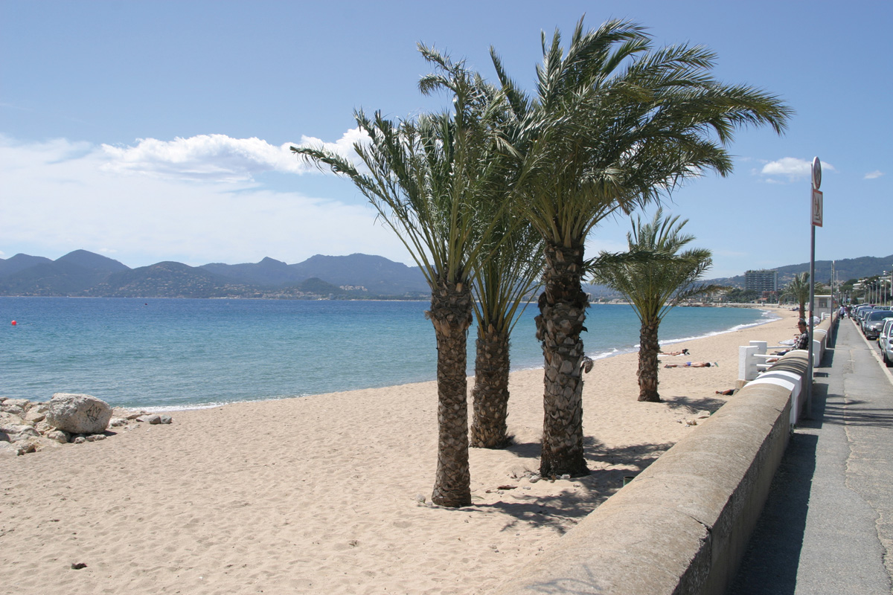

Cannes est une commune française de la communauté d'agglomération Cannes Pays de Lérins située dans le département des Alpes-Maritimes, en région Provence-Alpes-Côte d'Azur, sur la Côte d'Azur dont elle est une ville phare. Ses habitants sont appelés les Cannois en français et les canenc en occitan provençal (prononcé localement canenc et canenco).
